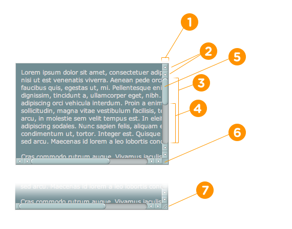

Custom Scrollbars in WebKit
Way back in the day, you could customize scrollbars in IE (5.5) with non-standard CSS properties like scrollbar-base-color which you would use on the element that scrolls (like the <body>) and do totally rad things. IE dropped that.
{kind=link}
These days, customizing scrollbars is back, but it's WebKit this
time. It's a bit better now, because the properties are vendor-prefixed
(e.g. ::-webkit-scrollbar) and use the "Shadow DOM". This has been around for a couple of years. David Hyatt blogged it in early 2009 and put together an example page of just about every combination of scrollbar possibilities you could ever want.
The Goods
The Different Pieces
These are the pseudo elements themselves. The actual parts of the scrollbars.
::-webkit-scrollbar { /* 1 */ }
::-webkit-scrollbar-button { /* 2 */ }
::-webkit-scrollbar-track { /* 3 */ }
::-webkit-scrollbar-track-piece { /* 4 */ }
::-webkit-scrollbar-thumb { /* 5 */ }
::-webkit-scrollbar-corner { /* 6 */ }
::-webkit-resizer { /* 7 */ }
The Different States
These are the pseudo class selectors. They allow for more specific selection of the parts, like when the scrollbar is in different states.
:horizontal
:vertical
:decrement
:increment
:start
:end
:double-button
:single-button
:no-button
:corner-present
:window-inactiveI'm going to steal this whole section from David's blog post on the WebKit blog because it explains each part well:
:horizontal – The horizontal pseudo-class applies to any scrollbar pieces that have a horizontal orientation.
:vertical – The vertical pseudo-class applies to any scrollbar pieces that have a vertical orientation.
:decrement – The decrement pseudo-class applies to buttons and track pieces. It indicates whether or not the button or track piece will decrement the view’s position when used (e.g., up on a vertical scrollbar, left on a horizontal scrollbar).
:increment – The increment pseudo-class applies to buttons and track pieces. It indicates whether or not a button or track piece will increment the view’s position when used (e.g., down on a vertical scrollbar, right on a horizontal scrollbar).
:start – The start pseudo-class applies to buttons and track pieces. It indicates whether the object is placed before the thumb.
:end – The end pseudo-class applies to buttons and track pieces. It indicates whether the object is placed after the thumb.
:double-button – The double-button pseudo-class applies to buttons and track pieces. It is used to detect whether a button is part of a pair of buttons that are together at the same end of a scrollbar. For track pieces it indicates whether the track piece abuts a pair of buttons.
:single-button – The single-button pseudo-class applies to buttons and track pieces. It is used to detect whether a button is by itself at the end of a scrollbar. For track pieces it indicates whether the track piece abuts a singleton button.
:no-button – Applies to track pieces and indicates whether or not the track piece runs to the edge of the scrollbar, i.e., there is no button at that end of the track.
:corner-present – Applies to all scrollbar pieces and indicates whether or not a scrollbar corner is present.
:window-inactive – Applies to all scrollbar pieces and indicates whether or not the window containing the scrollbar is currently active. (In recent nightlies, this pseudo-class now applies to ::selection as well. We plan to extend it to work with any content and to propose it as a new standard pseudo-class.)
All together now
These pseudo elements and pseudo class selectors work together. Here are some random examples:
::-webkit-scrollbar-track-piece:start {
/* Select the top half (or left half) or scrollbar track individually */
}
::-webkit-scrollbar-thumb:window-inactive {
/* Select the thumb when the browser window isn't in focus */
}
::-webkit-scrollbar-button:horizontal:decrement:hover {
/* Select the down or left scroll button when it's being hovered by the mouse */
}Very Simple Example
To make a really simple custom scrollbar we could do this:
::-webkit-scrollbar {
width: 12px;
}
::-webkit-scrollbar-track {
-webkit-box-shadow: inset 0 0 6px rgba(0,0,0,0.3);
border-radius: 10px;
}
::-webkit-scrollbar-thumb {
border-radius: 10px;
-webkit-box-shadow: inset 0 0 6px rgba(0,0,0,0.5);
}In which we'd get this on a simple div with vertically overflowing text:
In The Wild
Check out the very subtle and nice scrollbars on Tim Van Damme's blog Maxvoltar (Update September 2012: Tim's site no longer uses this design):
The particularly nice bit here is that the scrollbar is on the body element, yet the scrollbar isn't stuck to the top, bottom, or right edge of the browser window as scroll bars normally are. I made a test page with copy-and-pasteable code to achieve that a similar effect:
On Forrst, they use custom scollbars on code snippets which are also pretty nice. They are less visually intense and so don't fight as much with the code highlighting.
Related
- Dion Almaer has a useful little "debug" page for scrollbars with all the parts in bold colors to see what's what. (from this article)
- Similar article on Beautiful Pixels.
- Opinions by Daniel Eckhart
- Google Wave went kinda overboard with them back when that was still a thing.
Plugin for replicating OS X Lion scrollbars.